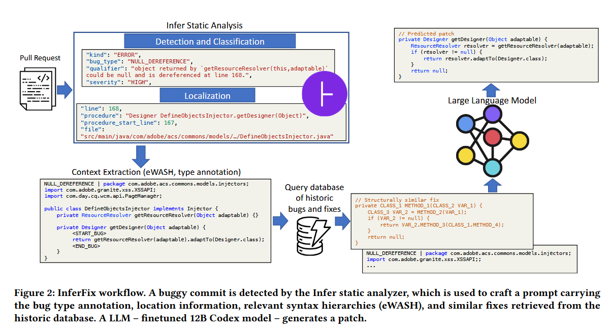
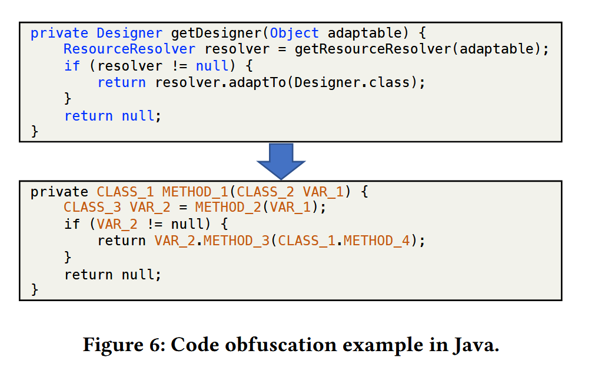
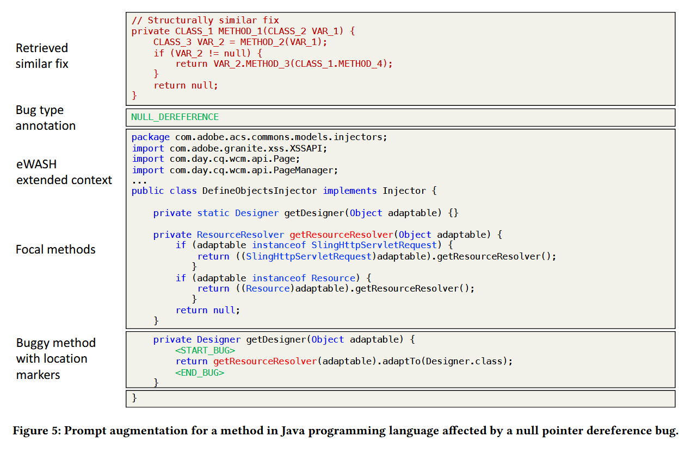
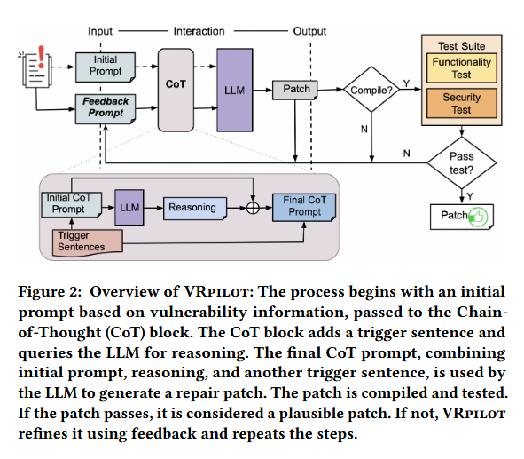

读paper11-基于LLM的缺陷修复3
读paper11-基于LLM的缺陷修复3
InferFix: End-to-End Program Repair with LLMs
主要关注：Null Pointer Dereference (NPD), Resource Leak (RL), and Thread Safety Violation (TSV)三种缺陷
对于缺陷修复部分：上下文预处理模块使用分析器提供的信息来提取有问题的方法，并保留与修复错误最相关的周围上下文 - import 语句、类签名、在 buggy 行调用的 getResourceResolver 方法的主体。然后，检索增强引擎在历史数据库中搜索语义相似的错误代码片段，并在prompt前加上类似的错误修复。最后，将增强的prompt发送到微调的 Codex 模型进行推理。然后，通过执行 Infer 静态分析器和单元测试作为 CI 管道的一部分来验证预测的补丁，以确保错误确实已修复，并且代码库中没有引入回归。

静态分析使用的是开源工具Infer：https://github.com/facebook/infer
代码匹配
https://aclanthology.org/2022.acl-long.431.pdf
https://github.com/celbree/ReACC
遵循ReACC方案，通过余弦相似度在查询向量和错误代码片段之间进行匹配，寻找语义等价的易受攻击代码片段。密集检索将每个代码片段映射为一个d维向量，相关性由查询向量和每个文档向量的点积确定。使用双向Transformer编码器生成查询和代码片段的密集向量表示，检索数据库中，错误代码片段编码为键，对应的修复表示为值。
采用对比学习训练，利用InfoNCE计算对比损失。对比学习是一种自监督学习技术，模型通过样本间的相似性和差异性进行学习。损失函数采用负对数似然形式，使用余弦相似度计算嵌入向量之间的相似性。
数据集每个示例都包含一个查询：一个有缺陷的代码片段的编码，一个正样本，表示相同 bug 类型的语义相似代码片段，以及一组负样本，这些样本是不同错误类型的不相关代码片段：
对比损失：
用 表示待查询的代码段。 查询模块数据通过键值对形式存储，错误代码片段 用作键，相应修复的字符串表示形式 用作值。将 [CLS] 标记的表示形式作为标记编码序列的摘要，并将查询与数据库中的每个代码片段之间的相似性计算为点积
项目中还使用混淆来提高代码匹配准确度，避免因为变量名、方法名等造成的不一致

Prompt构造
这其中比较有价值的是将缺陷代码上下文也一并提供给LLM。也是一种比较常见的操作

A Case Study of LLM for Automated Vulnerability Repair: Assessing Impact of Reasoning and Patch Validation Feedback

反馈相当于将回归测试加入到了整个修复过程中，如果不通过编译就将编译失败得到的信息构造prompt，不通过测试就将对应部分得到的信息构造prompt，整个过程就是基于这些Feaedback的。
核心是使用思维链增强整个生成过程，分为两个阶段：
- 推理提取（Reasoning Extraction）：最初的提示形式为
X' = Q: [X] A: [T]，其中[X]是问题，[T]是用于触发推理生成的句子（例如“让我们一步一步思考”）。LLM将在这一阶段生成推理。 - 答案提取（Answer Extraction）：最终提示形式为
[X'] [Z] [A]，其中[X']是初始提示，[Z]是推理的结果，而[A]是提取解决方案的触发句子。
基于反馈的信息，VRpilot为反馈迭代构建初始CoT提示（反馈提示），形式为 F = Q: [X] [C] [E] A: [T]，其中 [C] 是LLM在先前迭代中建议的代码更改的槽位；[E] 是上述反馈错误信息的槽位；[X] 和 [T] 分别是漏洞修复任务和触发句子的槽位。反馈迭代的最终CoT提示构建为 [X'][Z][A]，其中 [X'] 是反馈提示 F，[Z] 和 [A] 是用于推理和提取答案的槽位。此迭代过程通过整合来自编译错误、功能测试失败和安全测试的反馈信息，提高生成补丁的质量和准确性。
反馈与CoT谁的收益更高
通过实验这二者对于整个修复模型准确率带来的提升几乎是相同的，说明这二者都对修复准确率有非常高的提升作用。
一些思考
这两篇paper中有如下的关键点：
- 代码的检索增强生成。没什么创新型但非常好用的方法，一个非常大的问题在于需要非常庞大的知识库来提供代码生成的指导，指导的效果几乎与知识库规模成正比，此外知识库的增长也伴随着相似代码检索的效率问题，如何在大规模数据中高效的找到合适的指导代码。此外，不同语言语法会给相类似的知识带来语法上的差异而指导效果不佳，可以考虑AST（但这又是另一个研究了）
- 验证与反馈。修复完成后，通过一些方式，如编译、运行测试样例等等，测试被修复代码的可行性，同时对修复过程进行反馈、指导，能够提高修复准确度。这种方式实现上相对简单，但是可能脱离了静态分析的范畴。
- 此外还有一个点，我们可以通过LLM生成Top-K个修复代码，但肯定需要一种算法进行排序或者选择，找出最好的代码，这个的实现思路。
- 思维链。这个倒是没什么好说的，但不确定对于代码大模型是否合适，可以结合上一条提到的反馈机制（就像第二篇做的。